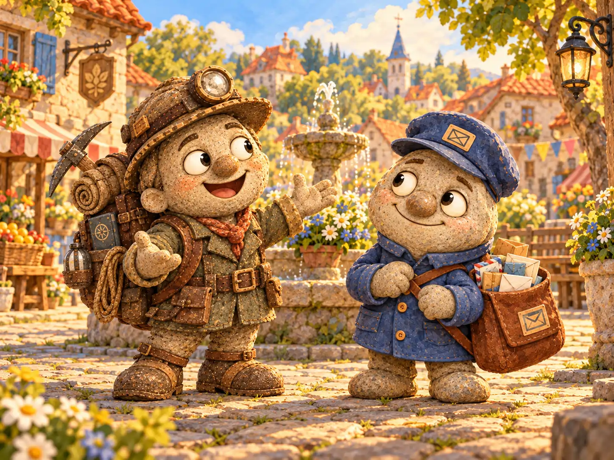
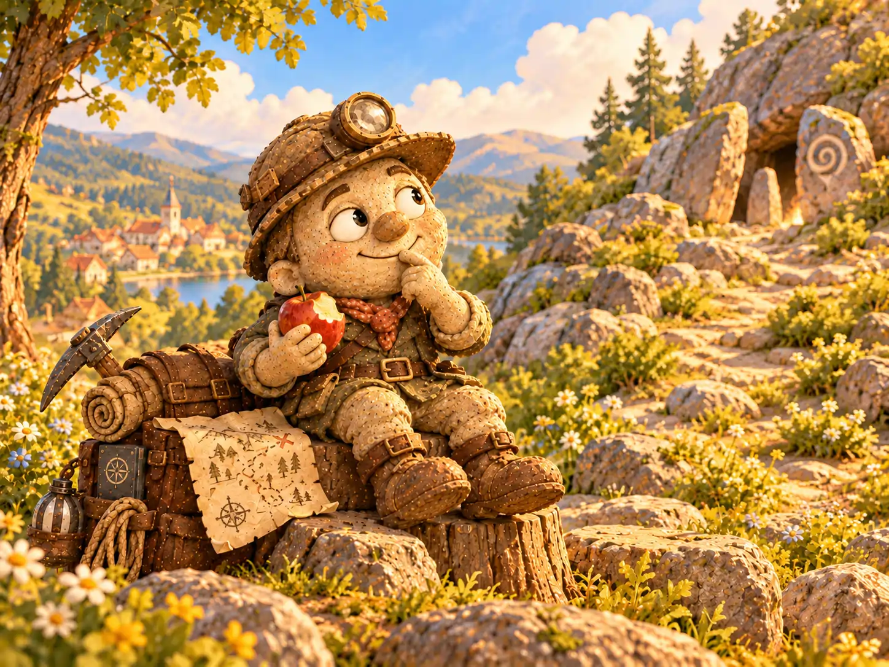
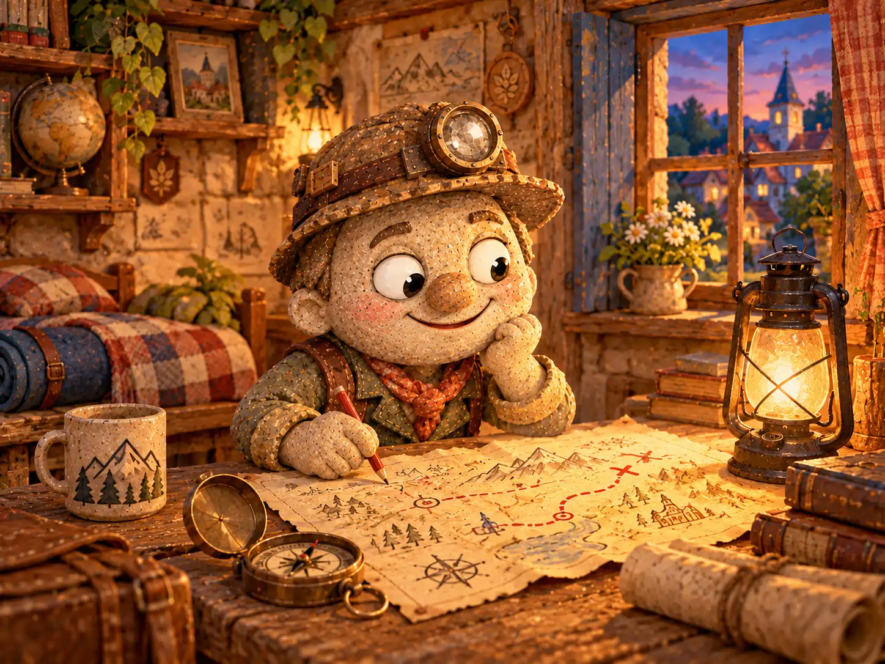

Если ранним утром в Галькино кто-нибудь слышал за окном звон металлических пряжек, скрип походных ботинок и бодрое насвистывание, можно было не выглядывать: Елисей Перевалов снова собирался в путешествие.
Елисей любил дороги, которых ещё не видел, и тропинки, за поворотом которых невозможно было угадать, что ждёт дальше. Он верил, что самое интересное случается с теми, кто не боится выйти за порог. Правда, между решением отправиться в путь и самим путешествием у него обычно проходило так мало времени, что подготовка просто не успевала начаться.
В его комнате стоял потёртый рюкзак, на стене висела кирка, а рядом лежала каска с фонарём. Всё это было проверено в небольших вылазках к реке и окрестным холмам. Елисей мог забыть запас еды, зато никогда не забывал взять с собой хорошее настроение.
Больше всего он мечтал найти тайный город с сокровищами. В его представлении город скрывался где-то за лесом: каменные башни заросшие плющом, старинные ходы под землей, а среди развалин вещи, о которых давно забыли.
Никто не знал, существует ли такой город на самом деле. Елисея это нисколько не смущало.
— Если бы всё было известно заранее, какое же это приключение? — объяснял он.
✦ ✦ ✦
Однажды Елисей отмечал на своих картах новые находи. Неожиданный звук за окном его отвлек и он выронил ручку. Нагнувшись поднять её, он увидел под шакфом какой-то листок бумаги. Это оакзалась старая потрёпанная карта. Её угол был оборван, несколько линий размылись от воды, но на одной из них сохранился красный крестик. Рядом едва можно было разобрать слова: «За старым ручьём»..
Откуда она там взялась, Елисей не знал. Возможно, когда-то он срисовал её с одного из черновиков картографа Фомы Знаменского. Но вместо того чтобы разобраться, что именно обозначено на листе, он решил: перед ним долгожданная подсказка.
— Сегодня я найду тайный город, — объявил он пустой комнате и принялся собираться.
В рюкзак отправились фляга, верёвка, компас, три яблока и небольшой кусок мела для отметок на камнях. Елисей надел каску, закрепил фонарь, прихватил кирку и вышел за дверь. Позавтракать он не успел: слишком уж не хотелось терять утро.
На площади ему встретился почтальон Тимофей Булыжников, который нёс небольшую пачку конвертов.
— Рано ты сегодня, — заметил Тимофей, оглядев рюкзак. — Далеко собрался?
— На поиски тайного города. Может, вернусь через неделю. А может, и позже.
Тимофей задумчиво посмотрел на Елисея.
— Тогда удачи. Если найдёшь почтовое отделение, узнай, есть ли у них письма для нашего.
Елисей рассмеялся, помахал ему и направился к тропе за последними домами.

✦ ✦ ✦
Лес встретил путешественника запахом сырой земли и тихим шелестом листьев. Ветви над тропой переплетались так густо, что солнечные пятна ложились на землю узкими полосками. Елисей подошел к развилке. Развернул карту, нашёл нарисованную развилку и уверенно шагнул направо.
Через несколько минут тропинка разделилась ещё раз. На карте второй развилки не было. Компас показывал на север, а ручей, который Елисей надеялся увидеть справа, шумел где-то слева.
Он остановился, прислушался и выбрал путь к воде. Старый ручей был единственной понятной подсказкой, а значит, стоило сперва найти его.
Вскоре среди папоротников показался большой плоский валун. На его поверхности тянулись три глубокие борозды, почти параллельные друг другу. Елисей провёл по ним ладонью. Борозды выглядели слишком ровными для случайных царапин, но камень мог так растрескаться и сам.
— Интересно, — прошептал он и отметил место на карте.
Он уже достал кирку, однако передумал: если борозды действительно были старинными знаками, лучше оставить их нетронутыми и показать Фоме. Вместо этого Елисей зарисовал находку на обороте листа.
Чуть дальше ручей уходил под корни огромной ивы. За деревом виднелся склон, покрытый колючим кустарником. Между ветвями темнела узкая щель, похожая на вход в пещеру. Елисей опустился на колени, посветил фонарём и обнаружил неглубокую выемку под нависшими корнями. До пещеры ей было далеко, но внутри лежало несколько предметов, принесённых водой.
Он выбрался обратно, отряхнул рукава и улыбнулся. Ни валун, ни выемка не обещали сокровищ, зато лес оказался полон вещей, которых он прежде не замечал.
✦ ✦ ✦
За ивой земля стала каменистой. Елисей заметил, что по другую сторону ручья среди травы выступают плоские камни. Они лежали не в ряд, как мостовая, но издалека напоминали остатки старой дороги.
Путешественник перебрался через ручей по упавшему стволу и присел возле ближайшего камня. Под слоем мха обнаружилась светлая ровная кромка. Елисей осторожно очистил её пальцами и увидел, что камень был обтёсан.
Сердце у него забилось быстрее. Может быть, когда-то здесь действительно проходила дорога? Или камень принесли к ручью с давней стройки? Елисей не знал ответа, но теперь у него появился настоящий вопрос, а не просто крестик на сомнительной карте.
Он поднялся выше по склону, стараясь рассмотреть, куда ведёт цепочка камней. Сквозь деревья впереди мелькнуло что-то светлое. Елисей уже собирался пробраться через кусты, когда заметил, что ремень рюкзака зацепился за ветку. Освободив его, он почувствовал, как сильно устал.
Тут же громко заурчал живот.
Елисей вспомнил, что с утра ничего не ел. Он устроился на сухом пне, достал яблоко и открыл флягу. После первого яблока он съел второе, а затем и третье. Голод стал слабее, но сил на обратную дорогу всё равно хотелось оставить побольше.
Солнце поднялось высоко. Елисей представил, как Марфа достаёт из печи горячие пироги, и вдруг понял, что деревенский обед сегодня кажется ему удивительно заманчивым.
Он посмотрел на склон, за которым могло скрываться что угодно, потом на карту с новыми отметками. Чтобы исследовать место как следует, понадобятся время, еда и, пожалуй, помощь Фомы с направлением старой дороги. Продолжать сейчас — значит спешить и пропустить важное.
— Ладно, — сказал Елисей неизвестному городу. — Сегодня мы познакомились. Остальное — в другой раз.
Он запомнил поворот у ивы, положил карту в карман и пошёл обратно.

✦ ✦ ✦
К обеду Елисей уже сидел за столом в Галькино. На его ботинках осталась лесная глина, а на рукаве прилип сухой листок. Выглядел он таким довольным, будто вернулся из дальних стран.
— Нашёл город? — спросила Василиса Камушкина, заглянувшая по дороге в лавку.
— Пока нет, — честно ответил он. — Но нашёл валун со странными бороздами, обтёсанные камни и место, куда стоит вернуться.
— Значит, завтра снова пойдёшь?
Елисей посмотрел на свой рюкзак. Фляга была пуста, яблоки закончились, а ноги приятно ныли после дороги.
— Завтра сначала расспрошу Фому о карте, — сказал он. — А уж потом отправлюсь. В следующий раз возьму с собой что-нибудь посытнее яблок.
Вечером Елисей разложил находки и заметки на столе. Он аккуратно перенёс борозды валуна и расположение плоских камней на чистый лист. Затем обвёл вопросительным знаком светлое пятно, которое видел за кустарником. Место пока не стало тайным городом, но превратилось в загадку, к которой хотелось вернуться.
Прошла неделя. Елисей успел сходить к реке, поговорить с Фомой, поправить крепление фонаря и придумать несколько новых маршрутов. До каменистого склона он пока не добрался: то погода портилась, то появлялась другая тропа, которую невозможно было оставить без внимания.
Однажды Тимофей увидел его у дома с раскрытым рюкзаком.
— Что, снова тайный город?
— Конечно, — ответил Елисей. — Только сперва загляну за мельницу. Там после дождя открылся новый проход между камнями.
— А прежний поход?
Елисей усмехнулся и осторожно убрал карту в боковой карман.
— Тайный город подождёт. Он ведь не знает, что я уже почти вышел.
Тимофей покачал головой, но спорить не стал. Он давно понял: Елисей отправляется не столько за сокровищами, сколько за возможностью однажды их найти. Иногда эта возможность ждёт за дальним лесом. А иногда — за ближайшим поворотом.

В Почтовом архиве Галькино сохранилась запись:
«Елисей Перевалов, путешественник. Отправился на поиски тайного города с сокровищами. Обнаружил несколько любопытных следов, вернулся к обеду. Поиск не завершён: путешественник обещал продолжить после уточнения маршрута и пополнения припасов».